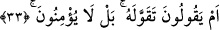
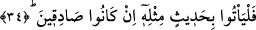

Halef b. Fulanım” diyerek kibirde bulununca bu Hz. Ömer (r.a.)’ın kulağına gitmiş. Hz.
Ömer ona çok kızarak bir adam göndermiş. Safvan b. Ümeyye Hz. Ömer (r.a.)’ın
huzuruna gelip: “Senin sözünü ettiğin bu adam annenin kaybettiği kişi mi?” deyince
Ömer (r.a.) hışımla sözlerine başlayarak: “Şâyet azıcık Allah’tan korkun olsa bir
faziletin, çok az bir miktar aklın olsaydı asâletin ve yine güzel ahlâkın olsaydı
şahsiyetin olurdu. Ama maalesef sende bunlar yok. O halde sen köpekten de daha şerli
bir kimsesin!” diye çıkışmış.
“Yoksa onlar, azgın bir topluluk mudur?”Yâni yoksa onlar hakkın ortaya çıkmasına
rağmen tekâbür ve inadda sınırı aşan, rüşd ve istikamet etrafında dönüp dolaşmayan
kavim midir ki bu nedenle akıl ve zan dâiresini de aşıp iftira yolunu seçiyorlar?
İbn Şeyh’in izahına göre âyet-i kerîmede onların maksadlarının aslında tuğyan
olmasının son kısımda getirilmesinin, akıllarının noksanlığını belirtme ve müslümanlara
tesellideki en tesirli yolu kullanmaktan öte, yermenin en etkili metodunun bu olduğunu,
zira her kim Allah’a isyan ederse O’nun gazabına müstehak olacağını belirtmek
amacıyla getirilmiştir.
33. Yahut «Onu kendisi uydurdu!» mu diyorlar? Hayır, onlar îman etmezler.
“Yahut «Onu kendisi uydurdu!» mu diyorlar?” Bu âyet, müşriklerin sözlerinin bir
ileri aşamasındaki çirkin şeklinin en zâhir bir ifâdesidir. Öyleki onlar Peygamber
(s.a.)’i kendi tarafından Kur’an uydurup daha sonra: “Bu Allah’ın indindendir.” deyip
halka düzmece şeyler söylemekle itham ediyorlar. Tekavvul, yalnızca yalan sözde
kullanılan ve kişinin bir sözün sorumluluğunu üzerine alması anlamına gelen bir
ifâdedir. O halde buranın mânâsı, “Muhammed, Kur’ân’ı kendi nefsinden uydurdu”
şeklindedir. Oysa iş onların iddiâ ettikleri gibi değildir.
“Hayır, onlar îman etmezler.” Kesinlikle onlar inanmazlar. Zira Allah onların kalbini
mühürlemiştir.
İrşâd’da bu hususta şöyle geçmektedir: Müşrikler küfür ve inadları sebebiyle
Rasûlullah (s.a.)’e herkes tarafından bâtıl olduğu bilinen bu boş iftiraları atıyorlar. Bu
iftiralar nasıl doğru olabilir ki?! Rasûlullah sadece Arapların içinden çıkmış, bütün
arabın ve arab olmayan tüm insanlığın bir benzerini getiremediği Kur’ân’ın kendisine
verildiği bir elçidir. Onların inad ederek inanmamaları da, söyledikleri sözlerin bâtıl ve
çelişkili olduğunu bildiklerine işâret etmektedir.